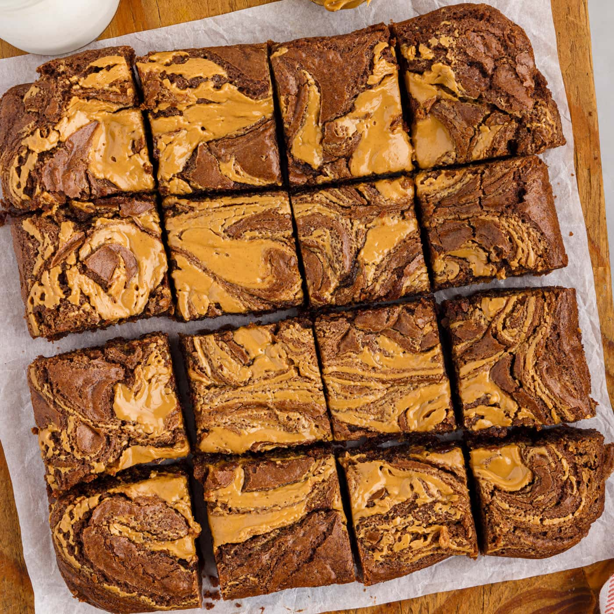

Chocolate Peanut Butter Brownies

Description
Chocolate brownies mixed with lots of peanut butter with a rich and creamy chocolate and peanut butter swirl
on top.
Ingredients
- 1/2 Cup Unsweetend Cocoa Powder
- 1/2 Cup Powdered Sugar
- 3/4 Cup All Purpose Flour
- 1/2 Tsp Salt
- 1/2 Cup Unsalted Butter (Melted)
- 1 Cup Sugar
- 2 Eggs
- 1 Tbsp Water
- 2 Tsp Vanilla Extract
- 1/3 Cup Chocolate Chips
- 2/3 Cup Peanut Butter Chips
- Mini Recees Peanut Butter Cups
- 1/3 Cup Creamy Peanut Butter
Steps
- Preheat oven to 350° and line a 9"x13" baking pan with foil. Spray
foil with cooking spray.
- In a bowl whisk together cocoa powder, sugar, flour and salt.
- In a seperate bowl mix together butter and sugar. Allow mixture to sit at
room temp for ~5 minutes. After 5 minutes add eggs, vanilla extract and water.
- Pour wet ingredients into dry ingredients and stir together with a rubber
spatula.
- Set aside ~1/3 cup of brownie batter for topping. Fold peanut butter cups and chocolate
chips into the remaining batter. Pour mixture into greased pan.
- Using a tablespoon take a spoonful of brownie batter, that was set aside,
and place on top of brownies in pan. Take a spoonful of creamy peanut butter and
place that on top of the brownies as well. Repeat unitl brownie batter reserves and
peanut butter are gone.
- Using a sharp knife carve various figure eight patterns over the top of the brownies
to mix together the peanut butter and brownie batter on top.
- Bake 25-30 minutes or until a toothpick comes out of the center mostly clean, no batter
just fudgy crumbs.
- Remove foil from pan and allow brownies to cool on a wire rack.